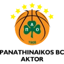

Panathinaikos
Clubs · EuroLeague · Greece
Panathinaikos play the 2026–27 EuroLeague with a 16-man squad from 6 countries, 6 of them from Greece. Below: the full roster, then 74 former players whose careers we follow and 8 Final Four starting fives.
Panathinaikos roster 2026–27
| # | Player | Pos | Nationality | Height | Born |
|---|---|---|---|---|---|
| 0 | Panagiotis Kalaitzakis | F | Greece | 200 cm | 1999 |
| 3 | Sylvain Francisco | G | France | 186 cm | 1997 |
| 6 | Dimitris Moraitis | G | Greece | 194 cm | 1999 |
| 7 | Brancou Badio | G | Senegal | 191 cm | 1999 |
| 10 | Kostas Sloukas | G | Greece | 190 cm | 1990 |
| 11 | Nigel Hayes-Davis | F | USA | 201 cm | 1994 |
| 17 | Nikos Rogkavopoulos | F | Greece | 203 cm | 2001 |
| 22 | Jerian Grant | G | USA | 193 cm | 1992 |
| 25 | Kendrick Nunn | G | USA | 190 cm | 1995 |
| 26 | Mathias Lessort | C | France | 206 cm | 1995 |
| 28 | Guerschon Yabusele | F | France | 203 cm | 1995 |
| 32 | Isaac Bonga | F | Germany | 203 cm | 1999 |
| 41 | Juancho Hernangomez | F | Spain | 206 cm | 1995 |
| 44 | Dinos Mitoglou | F | Greece | 210 cm | 1996 |
| 72 | Eleftherios Mantzoukas | F | Greece | 207 cm | 2003 |
| 93 | Moustapha Fall | C | France | 218 cm | 1992 |
The squad in numbers
- 16players
- 6nationalities
- 6from Greece
- 200 cmaverage height
The tallest is Moustapha Fall at 218 cm. The youngest is Eleftherios Mantzoukas (born 2003) and the most experienced Kostas Sloukas (born 1990). Beyond Greece, the squad draws most on France (4), USA (3) and Germany (1). Dimitris Moraitis, Dinos Mitoglou and Eleftherios Mantzoukas are back for another spell at the club.
Final Four starting fives
The Complete the Five archive holds 8 Final Four starting fives for Panathinaikos, 5 of them title winners (2002, 2007, 2009, 2011 and 2024). It covers the Final Fours of 2002 to 2025 (2020 was cancelled).
2025
- PG Kendrick Nunn
- SG Jerian Grant
- SF Cedi Osman
- PF Juancho Hernangomez
- C Wenyen Gabriel
2024 · champions 🏆
- PG Jerian Grant
- SG Kendrick Nunn
- SF Ioannis Papapetrou
- PF Dinos Mitoglou
- C Mathias Lessort
2012
- PG Sarunas Jasikevicius
- SG Dimitris Diamantidis
- SF Romain Sato
- PF Kostas Kaimakoglou
- C Aleks Maric
2011 · champions 🏆
- PG Dimitris Diamantidis
- SG Nick Calathes
- SF Romain Sato
- PF Antonis Fotsis
- C Ian Vougioukas
2009 · champions 🏆
- PG Vassilis Spanoulis
- SG Drew Nicholas
- SF Stratos Perperoglou
- PF Antonis Fotsis
- C Nikola Pekovic
2007 · champions 🏆
- PG Dimitris Diamantidis
- SG Sani Becirovic
- SF Ramunas Siskauskas
- PF Dimos Dikoudis
- C Mike Batiste
2005
- PG Jaka Lakovic
- SG Vlado Scepanovic
- SF Ibrahim Kutluay
- PF Mike Batiste
- C Kostas Tsartsaris
2002 · champions 🏆
- PG Damir Mulaomerovic
- SG Ibrahim Kutluay
- SF Dejan Bodiroga
- PF Fragiskos Alvertis
- C Darryl Middleton
Can you name them with one missing? That is Complete the Five.
Non-active players filed under Panathinaikos
Players no longer on a EuroLeague roster whom the games file under Panathinaikos, usually the club they are best known for. From all-time greats to last season's departures, they are the answers in the Non-active modes.
- Alexandros Samodurov Greece · Forward · 2022–2023, 2024–2026
- Antonis Fotsis Greece · Forward · 1997–2001, 2002–2003, 2008–2011, 2013–2017
- Byron Scott USA · Guard · 1997–1998
- Cedi Osman Turkey · Forward · 2024–2026 · now PAOK
- Darryl Middleton USA · Forward · 2000–2005
- Dejan Bodiroga Serbia · Forward · 1998–2002
- Dejan Tomasevic Serbia · Center · 2005–2008
- Dimitris Diamantidis Greece · Guard · 2004–2016
- Dimos Dikoudis Greece · Forward · 2006–2009
- Dominique Wilkins USA · Forward · 1995–1996
- Drew Nicholas USA · Guard · 2008–2011
- Fragiskos Alvertis Greece · Forward · 1990–2009
- Ibrahim Kutluay Turkey · Guard · 2001–2003, 2004–2005
- Ioannis Papapetrou Greece · Forward · 2018–2022, 2023–2025
- Jaka Lakovic Slovenia · Guard · 2002–2006
- Kostas Kaimakoglou Greece · Forward · 2010–2012
- Kostas Tsartsaris Greece · Forward · 2002–2013
- Lazaros Papadopoulos Greece · Center · 2001–2003
- Mike Batiste USA · Forward · 2003–2012, 2013–2014
- Nikola Pekovic Montenegro · Center · 2008–2010
- Nikos Chatzivrettas Greece · Guard · 2003–2009
- Sani Becirovic Slovenia · Guard · 2006–2008
- Stratos Perperoglou Greece · Forward · 2007–2012
- Vassilis Toliopoulos Greece · Guard · 2025–2026 · now Aris Thessaloniki
More former players
Every other career in the Euroball database that passed through Panathinaikos, most recent first, with the years at the club and, for those still playing in the EuroLeague or EuroCup, where they are now.
- Kenneth Faried 2025–2026 · now Baskonia
- T.J. Shorts 2025–2026 · now Valencia
- Omer Yurtseven 2024–2026
- Marius Grigonis 2022–2026 · now Zalgiris Kaunas
- Tibor Pleiss 2025
- Lorenzo Brown 2024–2025
- Wenyen Gabriel 2024–2025 · now Besiktas
- Kyle Guy 2023–2024 · now La Laguna Tenerife
- Luca Vildoza 2023–2024 · now Partizan
- Olek Balcerowski 2023–2024 · now FC Barcelona
- Derrick Williams 2022–2023
- Dwayne Bacon 2022–2023 · now Dubai BC
- Mateusz Ponitka 2022–2023 · now Bahcesehir College
- Nikos Chougkaz 2021–2023 · now PAOK
- Eleftherios Bochoridis 2014–2017, 2020–2023 · now Aris Thessaloniki
- Georgios Papagiannis 2014–2016, 2018–2023 · now Anadolu Efes
- Stefan Jovic 2021–2022 · now Aris Thessaloniki
- Nemanja Nedovic 2020–2022
- Marcus Foster 2020–2021 · now PAOK
- Mario Hezonja 2020–2021
- Nikolaos Persidis 2019–2020 · now PAOK
- Tyrese Rice 2019–2020
- Nick Calathes 2009–2012, 2015–2020 · now PAOK
- Keith Langford 2018–2019
- Matt Lojeski 2017–2019
- Thanasis Antetokounmpo 2017–2019 · now Aris Thessaloniki
- Chris Singleton 2016–2018
- Vasilis Charalampopoulos 2012–2018 · now Aris Thessaloniki
- Ioannis Bourousis 2016–2017
- Mike James 2016–2017 · now Anadolu Efes
- Vince Hunter 2015–2016 · now La Laguna Tenerife
- Jonas Maciulis 2012–2014
- Roko Ukic 2012–2014
- Sofoklis Schortsanitis 2012–2013
- Sarunas Jasikevicius 2007–2010, 2011–2012
- Milenko Tepic 2009–2011
- Vassilis Spanoulis 2005–2006, 2007–2010
- Dusan Kecman 2008–2009
- Milos Vujanic 2006–2007
- Ramunas Siskauskas 2006–2007
- Robertas Javtokas 2006–2007
- Oded Kattash 1999–2001
- Zeljko Rebraca 1999–2001
- Nando Gentile 1998–2001
- Dino Radja 1997–1999
- Fanis Christodoulou 1997–1998
- Ferran Martinez 1996–1998
- Panagiotis Giannakis 1994–1996
- Zarko Paspalj 1994–1995
- Nikos Galis 1992–1994
Play Panathinaikos in the games
- Roster Master: pick Panathinaikos and name all 16 players from memory.
- Mystery Player: any of them could be today's answer. A green club square means this club.
- The Grid and Path Between: the careers above are what they are built from.
More clubs from Greece
Olympiacos (EuroLeague) · Aris Thessaloniki (EuroCup) · PAOK (EuroCup)
Rosters are as of the start of the 2026–27 season, checked against the official EuroLeague rosters; transfers since then are not reflected. Spotted a mistake? Send a correction.
Club crests belong to their clubs and are shown only to identify them.